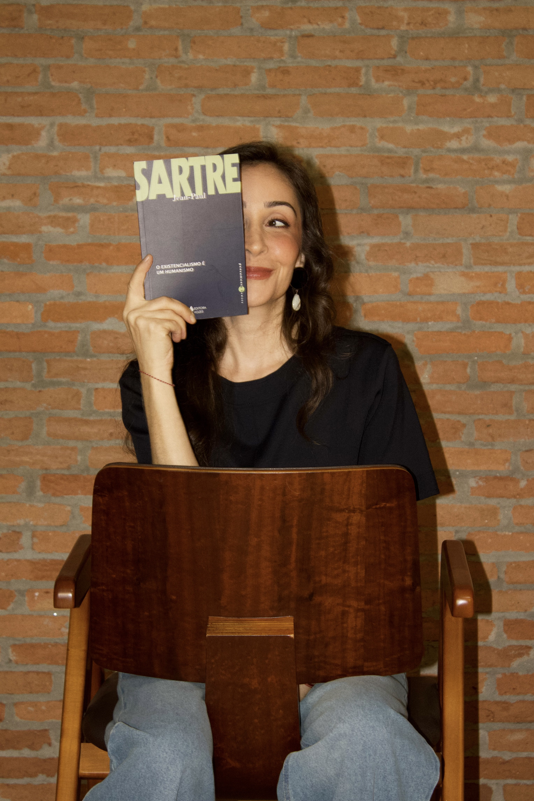

Sobre mim
Vanessa Cassarotti

Sou psicóloga (CRP 06/237547), com pós-graduação em psicologia fenomenológico-existencial. Atendo adolescentes, adultos e pessoas na maturidade em consultório, em São Paulo, e online.
Antes da psicologia, fui nutricionista, tive um restaurante próprio e passei pelo agronegócio, em uma empresa familiar. Essas profissões me ajudaram a ir aprendendo a sustentar escolhas e as consequências que vêm com elas, e a conviver com o que se segue depois que se decide. Em cada mudança de caminho levei comigo o que já tinha vivido, o que deu certo e o que deu errado, e é com essa bagagem que hoje escuto quem me procura. Ninguém chega totalmente pronto a uma escolha; seguimos em construção, decidindo com o que temos em mãos.
Levo esse percurso ao consultório como repertório. Conheço de perto o cansaço de quem sustenta muita coisa, a dúvida de quem pensa em mudar depois de muito tempo em uma direção e o desconforto de perceber que a vida ficou no piloto automático.
Sou mãe de duas filhas, e a convivência com elas segue sendo uma das minhas melhores escolas sobre vínculo, liberdade e cuidado.